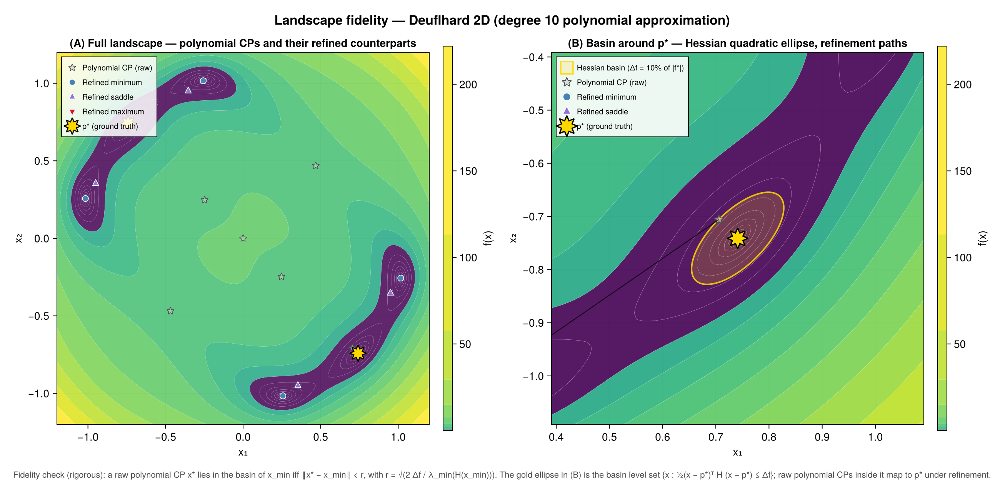

Landscape Fidelity Assessment
This guide covers assessing how well polynomial critical points correspond to objective function basins.

The figure above is the visual definition of basin membership used by check_hessian_basin: the gold ellipse in Panel B is the level set {x : ½(x − x_min)ᵀ H (x − x_min) ≤ Δf} with Δf = threshold_factor · |f_min| (or Δf = threshold_factor when f_min ≈ 0). The basin radius r = √(2 Δf / λ_min(H)) is the semi-axis along the flattest Hessian eigenvector — the most permissive direction. Regenerate with pkg/globtimpostprocessing/examples/figures/landscape_fidelity.jl.
Overview
Landscape fidelity measures the correspondence between polynomial approximant critical points and objective function basins of attraction.
Key Question: When the polynomial has a minimum at x, does local optimization from x converge to a nearby objective minimum, or does it jump to a different basin?
Quick Start
using GlobtimPostProcessing
using Optim
# 1. Load experiment results
results = load_experiment_results("/path/to/experiment")
df = results.critical_points
classify_all_critical_points!(df)
# 2. Get polynomial minima
minima_df = filter(row -> row.point_classification == "minimum", df)
# 3. Run local optimization from each minimum
refined_points = []
for row in eachrow(minima_df)
x_star = [row.x1, row.x2, row.x3, row.x4]
result = optimize(objective, x_star, BFGS())
push!(refined_points, Optim.minimizer(result))
end
# 4. Assess fidelity
fidelity_df = batch_assess_fidelity(minima_df, refined_points, objective)
# 5. Analyze
fidelity_rate = sum(fidelity_df.is_same_basin) / nrow(fidelity_df)
println("Landscape Fidelity: \$(round(100*fidelity_rate, digits=1))%")Assessment Methods
Method 1: Objective Proximity (Fast)
Checks if f(x*) ≈ f(x_min):
result = check_objective_proximity(x_star, x_min, objective; tolerance=0.05)
if result.is_same_basin
println("Same basin (rel_diff = \$(result.metric))")
else
println("Different basins")
endPros: Fast, no derivatives needed Cons: Can give false positives in flat regions
Method 2: Hessian Basin Estimation (Rigorous)
Estimates basin radius using local quadratic approximation:
using ForwardDiff
# Compute Hessian at refined minimum
H = ForwardDiff.hessian(objective, x_min)
# Check if x* is inside estimated basin
result = check_hessian_basin(x_star, x_min, objective, H)
if result.is_same_basin
println("Inside basin (distance/radius = \$(result.metric))")
println(" Distance: \$(result.distance)")
println(" Basin radius: \$(result.basin_radius)")
else
println("Outside basin")
endPros: Geometrically rigorous, adapts to curvature Cons: Requires Hessian computation (expensive for high dimensions)
Method 3: Composite Assessment (Recommended)
Combines multiple criteria with confidence scoring:
result = assess_landscape_fidelity(x_star, x_min, objective; hessian_min=H)
println("Basin membership: ", result.is_same_basin ? "SAME" : "DIFFERENT")
println("Confidence: \$(round(100*result.confidence, digits=1))%")
for c in result.criteria
status = c.passed ? "PASS" : "FAIL"
println(" \$status \$(c.name): \$(c.metric)")
endInterpretation Guide
Confidence Scores
| Confidence | Interpretation |
|---|---|
| 100% | All criteria agree - high confidence |
| 50-99% | Mixed results - uncertain, inspect manually |
| 0% | All criteria disagree - clearly different basins |
Typical Fidelity Rates
| Fidelity Rate | Interpretation |
|---|---|
| > 80% | Excellent - polynomial captures objective landscape well |
| 60-80% | Good - most polynomial minima are valid |
| 40-60% | Fair - significant differences between polynomial and objective |
| < 40% | Poor - polynomial landscape may be misleading |
Common Workflows
Workflow A: Quick Check (No Hessian)
for (x_star, x_min) in zip(polynomial_minima, refined_minima)
result = check_objective_proximity(x_star, x_min, objective)
println(result.is_same_basin ? "SAME" : "DIFF")
endWorkflow B: Rigorous Analysis (With Hessian)
using ForwardDiff
fidelity_results = []
for (x_star, x_min) in zip(polynomial_minima, refined_minima)
H = ForwardDiff.hessian(objective, x_min)
result = assess_landscape_fidelity(x_star, x_min, objective; hessian_min=H)
push!(fidelity_results, result)
end
# Summary
mean_confidence = mean([r.confidence for r in fidelity_results])
println("Mean confidence: \$(round(100*mean_confidence, digits=1))%")Workflow C: Batch Processing
# Prepare data
refined_points = [optimize_from(x) for x in polynomial_minima]
hessians = [ForwardDiff.hessian(objective, x) for x in refined_points]
# Batch assess
results_df = batch_assess_fidelity(
critical_points_df,
refined_points,
objective;
hessian_min_list=hessians
)
# Export
CSV.write("fidelity_assessment.csv", results_df)Troubleshooting
"All points classified as different basins"
Possible causes:
- Objective proximity tolerance too strict
- Polynomial approximation is poor
- Hessian threshold too small
Solution:
# More lenient parameters
result = assess_landscape_fidelity(
x_star, x_min, objective;
hessian_min=H,
obj_tolerance=0.10, # Default: 0.05
threshold_factor=0.20 # Default: 0.10
)"Hessian computation fails or is slow"
Possible causes:
- Objective not differentiable
- High-dimensional problem
Solution:
# Use objective proximity only (no Hessian)
result = assess_landscape_fidelity(x_star, x_min, objective)"Different results for nearby points"
This is expected behavior. Basin boundaries can be sharp, so points close in parameter space may lie in different basins.
Diagnostic:
for delta in [0.001, 0.01, 0.1]
x_perturbed = x_star .+ delta * randn(length(x_star))
x_min_perturbed = optimize_from(x_perturbed)
result = check_objective_proximity(x_perturbed, x_min_perturbed, objective)
println("Perturbation \$delta: ", result.is_same_basin)
endAPI Reference
Result Types
struct ObjectiveProximityResult
is_same_basin::Bool
metric::Float64 # Relative difference
f_star::Float64 # f(x*)
f_min::Float64 # f(x_min)
end
struct HessianBasinResult
is_same_basin::Bool
metric::Float64 # distance / basin_radius
distance::Float64 # ||x* - x_min||
basin_radius::Float64 # Estimated radius
end
struct LandscapeFidelityResult
is_same_basin::Bool
confidence::Float64 # 0.0 to 1.0
criteria::Vector # Individual criterion results
endFunctions
| Function | Description |
|---|---|
check_objective_proximity(x_star, x_min, objective) | Fast proximity check |
check_hessian_basin(x_star, x_min, objective, H) | Hessian-based basin check |
assess_landscape_fidelity(x_star, x_min, objective) | Composite assessment |
batch_assess_fidelity(df, refined_points, objective) | Batch processing |
Best Practices
- Always classify critical points first using
classify_all_critical_points! - Use composite assessment when possible for confidence scores
- Compute Hessians only when needed - expensive for high dimensions
- Export results to CSV for later analysis
- Test on synthetic examples first to build intuition
See Also
- Critical Point Refinement - Refinement workflow
- Quality Diagnostics - L2 quality assessment
- API Reference - Full function documentation